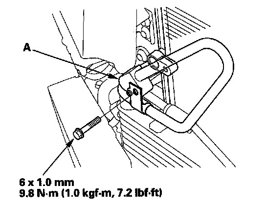
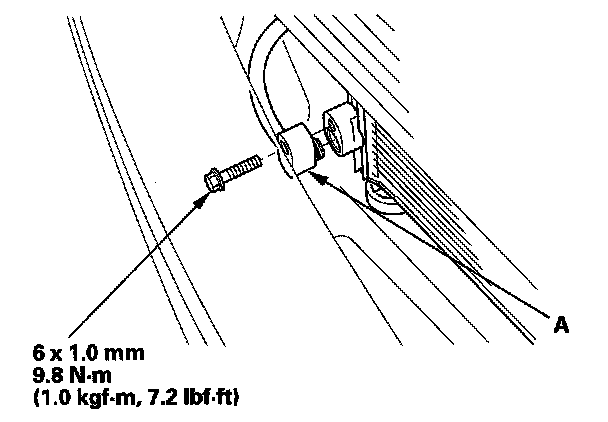
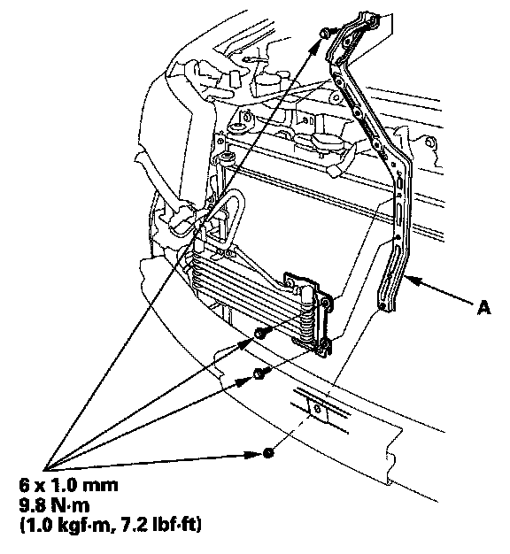
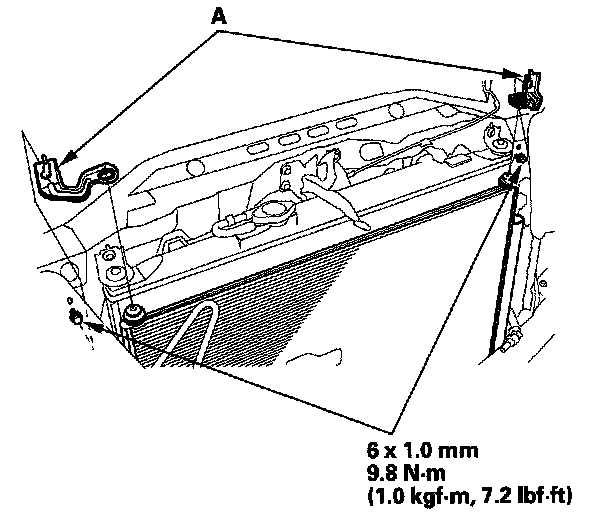
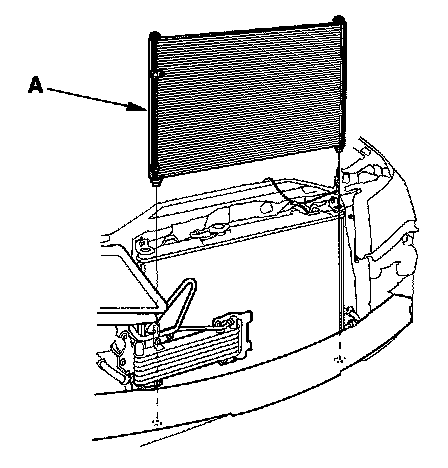

Condenser HVAC: Service and Repair
A/C Condenser Replacement1. Recover the refrigerant with a recovery/recycling charging station.
2. Remove the front bumper.

3. Remove the bolt, then disconnect the discharge hose (A) from the A/C condenser.

4. Remove the bolt, then disconnect the front receiver line (A) from the A/C condenser.

5. Remove the bolts, nut, and the ATF cooler bracket (A).

6. Loosen the bolts, then remove the A/C condenser upper mount brackets (A).
7. Remove the hood latch.

8. Remove the A/C condenser (A) by lifting it up. Be careful not to damage the radiator and A/C condenser fins when removing the A/C condenser.
9. Install the A/C condenser in the reverse order of removal, and note these items:
- If you're installing a new A/C condenser, add refrigerant oil (DENSO ND-OIL 8).
- Replace the O-rings with new ones at each fitting, and apply a thin coat of refrigerant oil before installing them. Be sure to use the correct O-rings for HFC-134a (R-134a) to avoid leakage.
- Immediately after using the oil, reinstall the cap on the container, and seal it to avoid moisture absorption.
- Do not spill the refrigerant oil on the vehicle; it may damage the paint; if the refrigerant oil contacts the paint, wash it off immediately.
- Be careful not to damage the radiator or the A/C condenser fins when installing the A/C condenser.
- Charge the system.
- Adjust the hood latch.